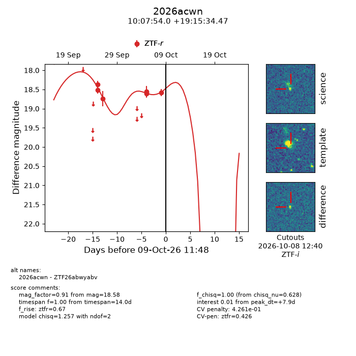
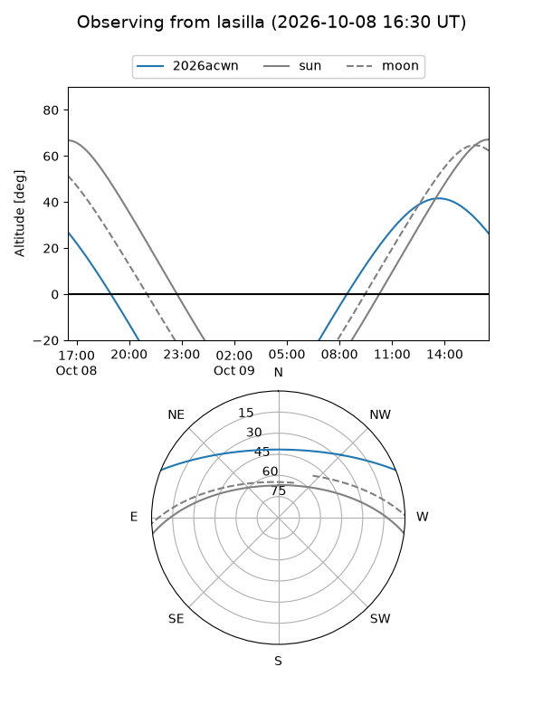
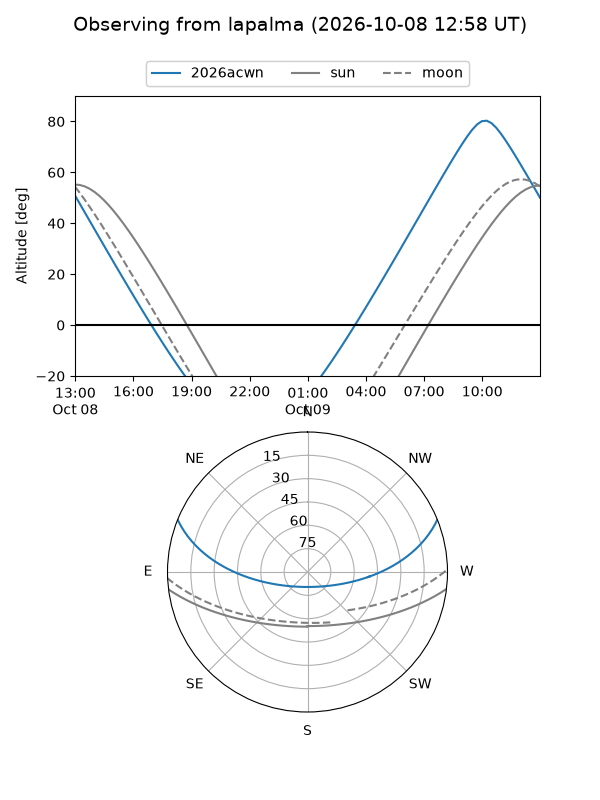
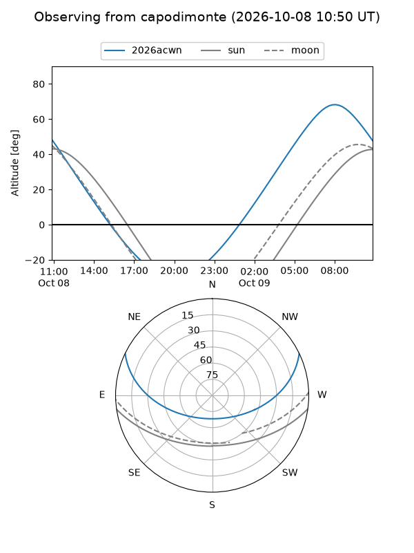
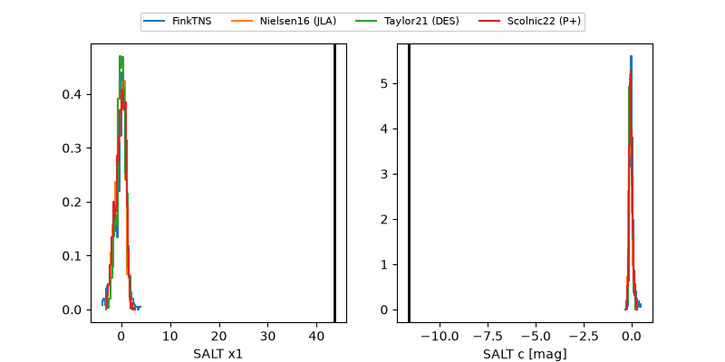

2026acwn
Target 2026acwn at 2026-10-09 11:50
Aliases and brokers:
FINK-ZTF: ztf.fink-portal.org/ZTF26abwyabv
Lasair-ZTF: lasair-ztf.lsst.ac.uk/objects/ZTF26abwyabv
ALeRCE-ZTF: alerce.online/object/ZTF26abwyabv
YSE-PZ: ziggy.ucolick.org/yse/transient_detail/2026acwn
TNS name: wis-tns.org/object/2026acwn
Direct TNS query: direct search
alt names
ZTF26abwyabv (ztf,fink_ztf)
2026acwn (tns,yse)
Coordinates:
equatorial (ra, dec) = 151.9751,+19.25958
equatorial (HMS+DMS) = 10:07:54.03,+19:15:34.47
galactic (l, b) = (215.8858,+51.77695)
Flags:
TNS type: nan
peak dt: +7.9
likely cv: !!
Photometry:
last ztfr=18.58
7 ztfr detections
Lightcurve

Visibility



Additional plots
